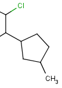
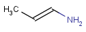
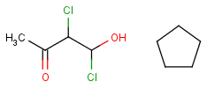

The Markush enumeration plugin can be used to generate a whole or a subset of
the library of a generic Markush structure. It is also capable of calculating
the total number of specific structures present in a Markush library. The plugin
is accessible from the Marvin GUI (Tools->Markush Enumeration), through the
cxcalc
command-line program (See this
link for the detailed usage of the plugin in command line.), via
API
and in the
Chemical Terms functions in JChem.
| Name |
Description |
Example |
Example Markush library member |
|---|
| R-groups |
R-groups (also referred to as "substituent variation")
are the most widely known Markush generic features. The variable
part of the structure is denoted by an R-atom (eg. R1), and the
definitions are given separately. In each definition the connection
points must be defined to show where the bonds of the R-atom are
linked. R-atoms can appear in both rings and chains and can have
up to two attachments points. The same R-atom can appear multiple
times, and the different occurrences are handled as different cases.
(So they can be substituted with different definitions.) R-group
nesting in R-group definitions is allowed to any depth, but
without recursion. (An R-group definition cannot use the
R-atom it is defining, not even through the use of other
embedding R-atom(s).) In Marvin and the plugin,
R-groups up to number R32767 can be used. |
|
 |
| Atom lists |
Atom lists are another example of substituent variation.
They define lists of atom types at a given position. There is no
restriction for the length of the list and for bond count of atom
lists.
|
|
|
| Bond lists |
The following bond lists (generic bond types) are
supported by the plugin: single or double, any(single, double or
triple), single or aromatic, double or aromatic. |
 |
 |
| Link nodes |
Link nodes are atoms that may repeat between two of
their designated bonds (called outer bonds, denoted by brackets).
All other substituents (if exist) repeat together with the atom.
In the results, the new bonds between the repeating atoms will have
the bond type of the lower order outer bond.
|
|
 |
| Position variation bonds |
Position variation bonds are bonds attached to variable atoms at one or both end positions.
The set of variable atoms is drawn as a multicenter group. A position variation bond connects
one atom from one end position to one atom from the other end position. If the end position is a single atom
then the bond is attached to this atom, if the end position is a multicenter group then the bond is attached
to an arbitrary member of the group.
Limitations:
- Substructure search is not yet prepared to handle the case when
both end positions are multicenter groups.
- A multicenter end position is not allowed to contain R-atoms.
- A multicenter end position is not allowed to contain another position variation bond
(ie, position variation bonds cannot be nested).
If a link node is a member of a multicenter group then the group will
include the repeated atoms as well in case when the original multicenter group contains no more atoms from the
link fragment, otherwise the position variation bond is part of the link fragment and repeated together with the
link node. Although an R-atom is not allowed to take part in position variation,
it can be the single-atom end position of a position variation bond, in which case its attachment point
is connected to the bond.
|

|

|